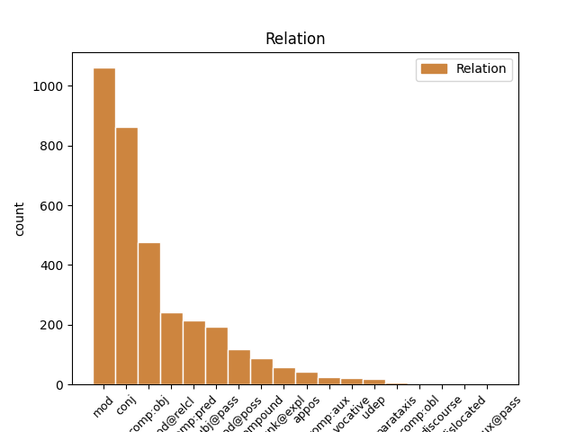
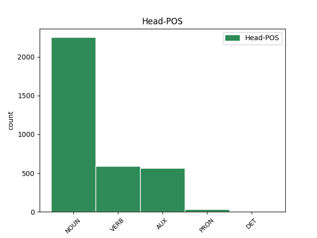
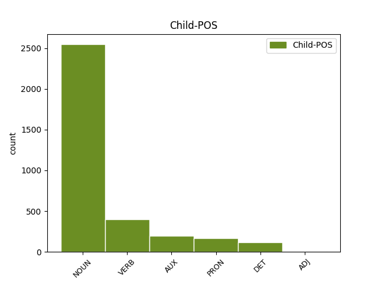

Distribution of features within this leaf



Agreement Rules sorted by frequency.
- When the dependent token is the conjunct(conj) of the head token,
1 Shakespeare _ _ _ _ 0 _ _ _
2 's _ _ _ _ 0 _ _ _
3 works _ _ _ _ 0 _ _ _
4 include _ _ _ _ 0 _ _ _
5 the _ _ _ _ 0 _ _ _
6 36 _ _ _ _ 0 _ _ _
7 plays _ _ _ _ 0 _ _ _
8 printed _ _ _ _ 0 _ _ _
9 in _ _ _ _ 0 _ _ _
10 the _ _ _ _ 0 _ _ _
11 First _ _ _ _ 0 _ _ _
12 Folio _ _ _ _ 0 _ _ _
13 of _ _ _ _ 0 _ _ _
14 1623 _ _ _ _ 0 _ _ _
15 , _ _ _ _ 0 _ _ _
16 listed _ _ _ _ 0 _ _ _
17 below _ _ _ _ 0 _ _ _
18 according _ _ _ _ 0 _ _ _
19 to _ _ _ _ 0 _ _ _
20 their _ _ _ _ 0 _ _ _
21 Folio _ _ _ _ 0 _ _ _
22 classification _ _ _ _ 0 _ _ _
23 as _ _ _ _ 0 _ _ _
24 comedies _ _ _ _ 0 _ _ _
25 , _ _ _ _ 0 _ _ _
26 histories history NOUN S Number=Plur 0 _ _ _
27 and _ _ _ _ 0 _ _ _
28 tragedies tragedy NOUN S Number=Plur 26 conj _ SpaceAfter=No
29 . _ _ _ _ 0 _ _ _
1 Shakespeare _ _ _ _ 0 _ _ _
2 's _ _ _ _ 0 _ _ _
3 works _ _ _ _ 0 _ _ _
4 include _ _ _ _ 0 _ _ _
5 the _ _ _ _ 0 _ _ _
6 36 _ _ _ _ 0 _ _ _
7 plays _ _ _ _ 0 _ _ _
8 printed _ _ _ _ 0 _ _ _
9 in _ _ _ _ 0 _ _ _
10 the _ _ _ _ 0 _ _ _
11 First _ _ _ _ 0 _ _ _
12 Folio _ _ _ _ 0 _ _ _
13 of _ _ _ _ 0 _ _ _
14 1623 _ _ _ _ 0 _ _ _
15 , _ _ _ _ 0 _ _ _
16 listed _ _ _ _ 0 _ _ _
17 below _ _ _ _ 0 _ _ _
18 according _ _ _ _ 0 _ _ _
19 to _ _ _ _ 0 _ _ _
20 their _ _ _ _ 0 _ _ _
21 Folio Folio NOUN S Number=Sing 22 mod _ _
22 classification classification NOUN S Number=Sing 0 _ _ _
23 as _ _ _ _ 0 _ _ _
24 comedies _ _ _ _ 0 _ _ _
25 , _ _ _ _ 0 _ _ _
26 histories _ _ _ _ 0 _ _ _
27 and _ _ _ _ 0 _ _ _
28 tragedies _ _ _ _ 0 _ _ _
29 . _ _ _ _ 0 _ _ _
1 Shakespeare _ _ _ _ 0 _ _ _
2 's _ _ _ _ 0 _ _ _
3 works _ _ _ _ 0 _ _ _
4 include include VERB V Mood=Ind|Number=Plur|Tense=Pres|VerbForm=Fin 0 _ _ _
5 the _ _ _ _ 0 _ _ _
6 36 _ _ _ _ 0 _ _ _
7 plays play NOUN S Number=Plur 4 comp:obj _ _
8 printed _ _ _ _ 0 _ _ _
9 in _ _ _ _ 0 _ _ _
10 the _ _ _ _ 0 _ _ _
11 First _ _ _ _ 0 _ _ _
12 Folio _ _ _ _ 0 _ _ _
13 of _ _ _ _ 0 _ _ _
14 1623 _ _ _ _ 0 _ _ _
15 , _ _ _ _ 0 _ _ _
16 listed _ _ _ _ 0 _ _ _
17 below _ _ _ _ 0 _ _ _
18 according _ _ _ _ 0 _ _ _
19 to _ _ _ _ 0 _ _ _
20 their _ _ _ _ 0 _ _ _
21 Folio _ _ _ _ 0 _ _ _
22 classification _ _ _ _ 0 _ _ _
23 as _ _ _ _ 0 _ _ _
24 comedies _ _ _ _ 0 _ _ _
25 , _ _ _ _ 0 _ _ _
26 histories _ _ _ _ 0 _ _ _
27 and _ _ _ _ 0 _ _ _
28 tragedies _ _ _ _ 0 _ _ _
29 . _ _ _ _ 0 _ _ _
1 his _ _ _ _ 0 _ _ _
2 Captain _ _ _ _ 0 _ _ _
3 Ahab _ _ _ _ 0 _ _ _
4 in _ _ _ _ 0 _ _ _
5 Moby _ _ _ _ 0 _ _ _
6 - _ _ _ _ 0 _ _ _
7 Dick _ _ _ _ 0 _ _ _
8 is be AUX V Mood=Ind|Number=Sing|Person=3|Tense=Pres|VerbForm=Fin 0 _ _ _
9 a _ _ _ _ 0 _ _ _
10 classic _ _ _ _ 0 _ _ _
11 tragic _ _ _ _ 0 _ _ _
12 hero hero NOUN S Gender=Masc|Number=Sing 8 comp:pred _ SpaceAfter=No
13 , _ _ _ _ 0 _ _ _
14 inspired _ _ _ _ 0 _ _ _
15 by _ _ _ _ 0 _ _ _
16 King _ _ _ _ 0 _ _ _
17 Lear _ _ _ _ 0 _ _ _
18 . _ _ _ _ 0 _ _ _
1 He _ _ _ _ 0 _ _ _
2 wrote _ _ _ _ 0 _ _ _
3 them _ _ _ _ 0 _ _ _
4 in _ _ _ _ 0 _ _ _
5 a _ _ _ _ 0 _ _ _
6 stylised _ _ _ _ 0 _ _ _
7 language language NOUN S Number=Sing 0 _ _ _
8 that _ _ _ _ 0 _ _ _
9 does do AUX VM Mood=Ind|Number=Sing|Person=3|Tense=Pres|VerbForm=Fin 7 mod@relcl _ _
10 not _ _ _ _ 0 _ _ _
11 always _ _ _ _ 0 _ _ _
12 spring _ _ _ _ 0 _ _ _
13 naturally _ _ _ _ 0 _ _ _
14 from _ _ _ _ 0 _ _ _
15 the _ _ _ _ 0 _ _ _
16 needs _ _ _ _ 0 _ _ _
17 of _ _ _ _ 0 _ _ _
18 the _ _ _ _ 0 _ _ _
19 characters _ _ _ _ 0 _ _ _
20 or _ _ _ _ 0 _ _ _
21 the _ _ _ _ 0 _ _ _
22 drama _ _ _ _ 0 _ _ _
23 . _ _ _ _ 0 _ _ _
1 No _ _ _ _ 0 _ _ _
2 Shakespearean _ _ _ _ 0 _ _ _
3 poems poem NOUN S Number=Plur 4 subj@pass _ _
4 were be AUX VA Mood=Ind|Number=Plur|Tense=Past|VerbForm=Fin 0 _ _ _
5 included _ _ _ _ 0 _ _ _
6 in _ _ _ _ 0 _ _ _
7 the _ _ _ _ 0 _ _ _
8 First _ _ _ _ 0 _ _ _
9 Folio _ _ _ _ 0 _ _ _
10 . _ _ _ _ 0 _ _ _
1 The _ _ _ _ 0 _ _ _
2 document _ _ _ _ 0 _ _ _
3 is _ _ _ _ 0 _ _ _
4 now _ _ _ _ 0 _ _ _
5 lost _ _ _ _ 0 _ _ _
6 , _ _ _ _ 0 _ _ _
7 however _ _ _ _ 0 _ _ _
8 , _ _ _ _ 0 _ _ _
9 and _ _ _ _ 0 _ _ _
10 scholars _ _ _ _ 0 _ _ _
11 differ _ _ _ _ 0 _ _ _
12 as _ _ _ _ 0 _ _ _
13 to _ _ _ _ 0 _ _ _
14 its its DET AP Number=Sing|Poss=Yes|PronType=Prs 15 mod@poss _ _
15 authenticity authenticity NOUN S Number=Sing 0 _ _ _
16 . _ _ _ _ 0 _ _ _
1 It it PRON PE Number=Sing|Person=3|PronType=Prs 2 unk@expl _ _
2 remains remain VERB V Mood=Ind|Number=Sing|Person=3|Tense=Pres|VerbForm=Fin 0 _ _ _
3 unclear _ _ _ _ 0 _ _ _
4 if _ _ _ _ 0 _ _ _
5 these _ _ _ _ 0 _ _ _
6 figures _ _ _ _ 0 _ _ _
7 represent _ _ _ _ 0 _ _ _
8 real _ _ _ _ 0 _ _ _
9 individuals _ _ _ _ 0 _ _ _
10 , _ _ _ _ 0 _ _ _
11 or _ _ _ _ 0 _ _ _
12 if _ _ _ _ 0 _ _ _
13 the _ _ _ _ 0 _ _ _
14 authorial _ _ _ _ 0 _ _ _
15 " _ _ _ _ 0 _ _ _
16 I _ _ _ _ 0 _ _ _
17 " _ _ _ _ 0 _ _ _
18 who _ _ _ _ 0 _ _ _
19 addresses _ _ _ _ 0 _ _ _
20 them _ _ _ _ 0 _ _ _
21 represents _ _ _ _ 0 _ _ _
22 Shakespeare _ _ _ _ 0 _ _ _
23 himself _ _ _ _ 0 _ _ _
24 , _ _ _ _ 0 _ _ _
25 though _ _ _ _ 0 _ _ _
26 Wordsworth _ _ _ _ 0 _ _ _
27 believed _ _ _ _ 0 _ _ _
28 that _ _ _ _ 0 _ _ _
29 with _ _ _ _ 0 _ _ _
30 the _ _ _ _ 0 _ _ _
31 sonnets _ _ _ _ 0 _ _ _
32 " _ _ _ _ 0 _ _ _
33 Shakespeare _ _ _ _ 0 _ _ _
34 unlocked _ _ _ _ 0 _ _ _
35 his _ _ _ _ 0 _ _ _
36 heart _ _ _ _ 0 _ _ _
37 " _ _ _ _ 0 _ _ _
38 . _ _ _ _ 0 _ _ _
1 Illusions _ _ _ _ 0 _ _ _
2 Perdues _ _ _ _ 0 _ _ _
3 extends _ _ _ _ 0 _ _ _
4 to _ _ _ _ 0 _ _ _
5 a _ _ _ _ 0 _ _ _
6 thousand _ _ _ _ 0 _ _ _
7 pages _ _ _ _ 0 _ _ _
8 after _ _ _ _ 0 _ _ _
9 starting _ _ _ _ 0 _ _ _
10 inauspiciously _ _ _ _ 0 _ _ _
11 in _ _ _ _ 0 _ _ _
12 a _ _ _ _ 0 _ _ _
13 small _ _ _ _ 0 _ _ _
14 - _ _ _ _ 0 _ _ _
15 town _ _ _ _ 0 _ _ _
16 print print NOUN S Number=Sing 17 compound _ _
17 shop shop NOUN S Number=Sing 0 _ _ _
18 , _ _ _ _ 0 _ _ _
19 whereas _ _ _ _ 0 _ _ _
20 La _ _ _ _ 0 _ _ _
21 Fille _ _ _ _ 0 _ _ _
22 aux _ _ _ _ 0 _ _ _
23 Yeux _ _ _ _ 0 _ _ _
24 D' _ _ _ _ 0 _ _ _
25 Or _ _ _ _ 0 _ _ _
26 ( _ _ _ _ 0 _ _ _
27 the _ _ _ _ 0 _ _ _
28 girl _ _ _ _ 0 _ _ _
29 with _ _ _ _ 0 _ _ _
30 the _ _ _ _ 0 _ _ _
31 golden _ _ _ _ 0 _ _ _
32 eyes _ _ _ _ 0 _ _ _
33 , _ _ _ _ 0 _ _ _
34 1835 _ _ _ _ 0 _ _ _
35 ) _ _ _ _ 0 _ _ _
36 opens _ _ _ _ 0 _ _ _
37 with _ _ _ _ 0 _ _ _
38 a _ _ _ _ 0 _ _ _
39 broad _ _ _ _ 0 _ _ _
40 panorama _ _ _ _ 0 _ _ _
41 of _ _ _ _ 0 _ _ _
42 Paris _ _ _ _ 0 _ _ _
43 but _ _ _ _ 0 _ _ _
44 becomes _ _ _ _ 0 _ _ _
45 a _ _ _ _ 0 _ _ _
46 closely _ _ _ _ 0 _ _ _
47 plotted _ _ _ _ 0 _ _ _
48 novella _ _ _ _ 0 _ _ _
49 of _ _ _ _ 0 _ _ _
50 only _ _ _ _ 0 _ _ _
51 fifty _ _ _ _ 0 _ _ _
52 pages _ _ _ _ 0 _ _ _
53 . _ _ _ _ 0 _ _ _
1 Two _ _ _ _ 0 _ _ _
2 plays play NOUN S Number=Plur 0 _ _ _
3 not _ _ _ _ 0 _ _ _
4 included _ _ _ _ 0 _ _ _
5 in _ _ _ _ 0 _ _ _
6 the _ _ _ _ 0 _ _ _
7 First _ _ _ _ 0 _ _ _
8 Folio _ _ _ _ 0 _ _ _
9 , _ _ _ _ 0 _ _ _
10 The _ _ _ _ 0 _ _ _
11 Two _ _ _ _ 0 _ _ _
12 Noble _ _ _ _ 0 _ _ _
13 Kinsmen kinsman NOUN S Number=Plur 2 appos _ _
14 and _ _ _ _ 0 _ _ _
15 Pericles _ _ _ _ 0 _ _ _
16 , _ _ _ _ 0 _ _ _
17 Prince _ _ _ _ 0 _ _ _
18 of _ _ _ _ 0 _ _ _
19 Tyre _ _ _ _ 0 _ _ _
20 , _ _ _ _ 0 _ _ _
21 are _ _ _ _ 0 _ _ _
22 now _ _ _ _ 0 _ _ _
23 accepted _ _ _ _ 0 _ _ _
24 as _ _ _ _ 0 _ _ _
25 part _ _ _ _ 0 _ _ _
26 of _ _ _ _ 0 _ _ _
27 the _ _ _ _ 0 _ _ _
28 canon _ _ _ _ 0 _ _ _
29 , _ _ _ _ 0 _ _ _
30 with _ _ _ _ 0 _ _ _
31 scholars _ _ _ _ 0 _ _ _
32 agreed _ _ _ _ 0 _ _ _
33 that _ _ _ _ 0 _ _ _
34 Shakespeare _ _ _ _ 0 _ _ _
35 made _ _ _ _ 0 _ _ _
36 a _ _ _ _ 0 _ _ _
37 major _ _ _ _ 0 _ _ _
38 contribution _ _ _ _ 0 _ _ _
39 to _ _ _ _ 0 _ _ _
40 their _ _ _ _ 0 _ _ _
41 composition _ _ _ _ 0 _ _ _
42 . _ _ _ _ 0 _ _ _
1 Mr mister NOUN S Gender=Masc|Number=Sing 12 vocative _ _
2 President _ _ _ _ 0 _ _ _
3 , _ _ _ _ 0 _ _ _
4 the _ _ _ _ 0 _ _ _
5 priority _ _ _ _ 0 _ _ _
6 given _ _ _ _ 0 _ _ _
7 to _ _ _ _ 0 _ _ _
8 financial _ _ _ _ 0 _ _ _
9 and _ _ _ _ 0 _ _ _
10 monetary _ _ _ _ 0 _ _ _
11 criteria _ _ _ _ 0 _ _ _
12 reinforces reinforce VERB V Mood=Ind|Number=Sing|Person=3|Tense=Pres|VerbForm=Fin 0 _ _ _
13 the _ _ _ _ 0 _ _ _
14 increase _ _ _ _ 0 _ _ _
15 in _ _ _ _ 0 _ _ _
16 inequalities _ _ _ _ 0 _ _ _
17 of _ _ _ _ 0 _ _ _
18 every _ _ _ _ 0 _ _ _
19 shape _ _ _ _ 0 _ _ _
20 and _ _ _ _ 0 _ _ _
21 form _ _ _ _ 0 _ _ _
22 . _ _ _ _ 0 _ _ _
1 " _ _ _ _ 0 _ _ _
2 That _ _ _ _ 0 _ _ _
3 King _ _ _ _ 0 _ _ _
4 Shakespeare _ _ _ _ 0 _ _ _
5 " _ _ _ _ 0 _ _ _
6 , _ _ _ _ 0 _ _ _
7 the _ _ _ _ 0 _ _ _
8 essayist _ _ _ _ 0 _ _ _
9 Thomas _ _ _ _ 0 _ _ _
10 Carlyle _ _ _ _ 0 _ _ _
11 wrote _ _ _ _ 0 _ _ _
12 in _ _ _ _ 0 _ _ _
13 1840 _ _ _ _ 0 _ _ _
14 , _ _ _ _ 0 _ _ _
15 " _ _ _ _ 0 _ _ _
16 does do AUX VM Mood=Ind|Number=Sing|Person=3|Tense=Pres|VerbForm=Fin 0 _ _ _
17 not _ _ _ _ 0 _ _ _
18 he _ _ _ _ 0 _ _ _
19 shine shine NOUN S Number=Sing 16 comp:aux _ SpaceAfter=No
20 , _ _ _ _ 0 _ _ _
21 in _ _ _ _ 0 _ _ _
22 crowned _ _ _ _ 0 _ _ _
23 sovereignty _ _ _ _ 0 _ _ _
24 , _ _ _ _ 0 _ _ _
25 over _ _ _ _ 0 _ _ _
26 us _ _ _ _ 0 _ _ _
27 all _ _ _ _ 0 _ _ _
28 , _ _ _ _ 0 _ _ _
29 as _ _ _ _ 0 _ _ _
30 the _ _ _ _ 0 _ _ _
31 noblest _ _ _ _ 0 _ _ _
32 , _ _ _ _ 0 _ _ _
33 gentlest _ _ _ _ 0 _ _ _
34 , _ _ _ _ 0 _ _ _
35 yet _ _ _ _ 0 _ _ _
36 strongest _ _ _ _ 0 _ _ _
37 of _ _ _ _ 0 _ _ _
38 rallying _ _ _ _ 0 _ _ _
39 signs _ _ _ _ 0 _ _ _
40 ; _ _ _ _ 0 _ _ _
1 The _ _ _ _ 0 _ _ _
2 terms _ _ _ _ 0 _ _ _
3 instructed _ _ _ _ 0 _ _ _
4 that _ _ _ _ 0 _ _ _
5 she she PRON PE Gender=Fem|Number=Sing|Person=3|PronType=Prs 6 udep _ _
6 pass pass VERB V Mood=Ind|Number=Sing|Person=3|Tense=Pres|VerbForm=Fin 0 _ _ _
7 it _ _ _ _ 0 _ _ _
8 down _ _ _ _ 0 _ _ _
9 intact _ _ _ _ 0 _ _ _
10 to _ _ _ _ 0 _ _ _
11 " _ _ _ _ 0 _ _ _
12 the _ _ _ _ 0 _ _ _
13 first _ _ _ _ 0 _ _ _
14 son _ _ _ _ 0 _ _ _
15 of _ _ _ _ 0 _ _ _
16 her _ _ _ _ 0 _ _ _
17 body _ _ _ _ 0 _ _ _
18 " _ _ _ _ 0 _ _ _
19 . _ _ _ _ 0 _ _ _
1 The _ _ _ _ 0 _ _ _
2 italicised _ _ _ _ 0 _ _ _
3 phrase _ _ _ _ 0 _ _ _
4 parodying _ _ _ _ 0 _ _ _
5 the _ _ _ _ 0 _ _ _
6 line line NOUN S Number=Sing 0 _ _ _
7 " _ _ _ _ 0 _ _ _
8 Oh _ _ _ _ 0 _ _ _
9 , _ _ _ _ 0 _ _ _
10 tiger _ _ _ _ 0 _ _ _
11 's _ _ _ _ 0 _ _ _
12 heart heart NOUN S Number=Sing 6 parataxis _ _
13 wrapped _ _ _ _ 0 _ _ _
14 in _ _ _ _ 0 _ _ _
15 a _ _ _ _ 0 _ _ _
16 woman _ _ _ _ 0 _ _ _
17 's _ _ _ _ 0 _ _ _
18 hide _ _ _ _ 0 _ _ _
19 " _ _ _ _ 0 _ _ _
20 from _ _ _ _ 0 _ _ _
21 Shakespeare _ _ _ _ 0 _ _ _
22 's _ _ _ _ 0 _ _ _
23 Henry _ _ _ _ 0 _ _ _
24 VI _ _ _ _ 0 _ _ _
25 , _ _ _ _ 0 _ _ _
26 Part _ _ _ _ 0 _ _ _
27 3 _ _ _ _ 0 _ _ _
28 , _ _ _ _ 0 _ _ _
29 along _ _ _ _ 0 _ _ _
30 with _ _ _ _ 0 _ _ _
31 the _ _ _ _ 0 _ _ _
32 pun _ _ _ _ 0 _ _ _
33 " _ _ _ _ 0 _ _ _
34 Shake _ _ _ _ 0 _ _ _
35 - _ _ _ _ 0 _ _ _
36 Scene _ _ _ _ 0 _ _ _
37 " _ _ _ _ 0 _ _ _
38 , _ _ _ _ 0 _ _ _
39 identifies _ _ _ _ 0 _ _ _
40 Shakespeare _ _ _ _ 0 _ _ _
41 as _ _ _ _ 0 _ _ _
42 Greene _ _ _ _ 0 _ _ _
43 's _ _ _ _ 0 _ _ _
44 target _ _ _ _ 0 _ _ _
45 . _ _ _ _ 0 _ _ _
1 In _ _ _ _ 0 _ _ _
2 fact _ _ _ _ 0 _ _ _
3 , _ _ _ _ 0 _ _ _
4 agriculture _ _ _ _ 0 _ _ _
5 offers offer VERB V Mood=Ind|Number=Sing|Person=3|Tense=Pres|VerbForm=Fin 0 _ _ _
6 the _ _ _ _ 0 _ _ _
7 continent continent NOUN S Number=Sing 5 comp:obl _ _
8 its _ _ _ _ 0 _ _ _
9 best _ _ _ _ 0 _ _ _
10 opportunity _ _ _ _ 0 _ _ _
11 to _ _ _ _ 0 _ _ _
12 turn _ _ _ _ 0 _ _ _
13 a _ _ _ _ 0 _ _ _
14 vicious _ _ _ _ 0 _ _ _
15 cycle _ _ _ _ 0 _ _ _
16 of _ _ _ _ 0 _ _ _
17 poverty _ _ _ _ 0 _ _ _
18 into _ _ _ _ 0 _ _ _
19 a _ _ _ _ 0 _ _ _
20 virtuous _ _ _ _ 0 _ _ _
21 cycle _ _ _ _ 0 _ _ _
22 of _ _ _ _ 0 _ _ _
23 development _ _ _ _ 0 _ _ _
24 . _ _ _ _ 0 _ _ _
1 This _ _ _ _ 0 _ _ _
2 is be AUX V Mood=Ind|Number=Sing|Person=3|Tense=Pres|VerbForm=Fin 0 _ _ _
3 whale _ _ _ _ 0 _ _ _
4 meat _ _ _ _ 0 _ _ _
5 that _ _ _ _ 0 _ _ _
6 I _ _ _ _ 0 _ _ _
7 photographed _ _ _ _ 0 _ _ _
8 in _ _ _ _ 0 _ _ _
9 a _ _ _ _ 0 _ _ _
10 grocery _ _ _ _ 0 _ _ _
11 store _ _ _ _ 0 _ _ _
12 in _ _ _ _ 0 _ _ _
13 Tokyo _ _ _ _ 0 _ _ _
14 - _ _ _ _ 0 _ _ _
15 or _ _ _ _ 0 _ _ _
16 is be VERB V Mood=Ind|Number=Sing|Person=3|Tense=Pres|VerbForm=Fin 2 discourse _ _
17 it _ _ _ _ 0 _ _ _
18 ? _ _ _ _ 0 _ _ _
1 Those _ _ _ _ 0 _ _ _
2 females female NOUN S Number=Plur 5 dislocated _ SpaceAfter=No
3 , _ _ _ _ 0 _ _ _
4 they _ _ _ _ 0 _ _ _
5 're be AUX VA Mood=Ind|Number=Plur|Tense=Pres|VerbForm=Fin 0 _ _ _
6 not _ _ _ _ 0 _ _ _
7 trying _ _ _ _ 0 _ _ _
8 to _ _ _ _ 0 _ _ _
9 . _ _ _ _ 0 _ _ _
Disagree Examples:
1 Distribution _ _ _ _ 0 _ _ _
2 of _ _ _ _ 0 _ _ _
3 this _ _ _ _ 0 _ _ _
4 license _ _ _ _ 0 _ _ _
5 does do AUX VM Mood=Ind|Number=Sing|Person=3|Tense=Pres|VerbForm=Fin 0 _ _ _
6 not _ _ _ _ 0 _ _ _
7 create create VERB V Mood=Ind|Number=Plur|Tense=Pres|VerbForm=Fin 5 comp:aux _ _
8 an _ _ _ _ 0 _ _ _
9 attorney _ _ _ _ 0 _ _ _
10 - _ _ _ _ 0 _ _ _
11 client _ _ _ _ 0 _ _ _
12 relationship _ _ _ _ 0 _ _ _
13 . _ _ _ _ 0 _ _ _
1 Distribution _ _ _ _ 0 _ _ _
2 of _ _ _ _ 0 _ _ _
3 this _ _ _ _ 0 _ _ _
4 license _ _ _ _ 0 _ _ _
5 does _ _ _ _ 0 _ _ _
6 not _ _ _ _ 0 _ _ _
7 create create VERB V Mood=Ind|Number=Plur|Tense=Pres|VerbForm=Fin 0 _ _ _
8 an _ _ _ _ 0 _ _ _
9 attorney _ _ _ _ 0 _ _ _
10 - _ _ _ _ 0 _ _ _
11 client _ _ _ _ 0 _ _ _
12 relationship relationship NOUN S Number=Sing 7 comp:obj _ SpaceAfter=No
13 . _ _ _ _ 0 _ _ _
1 Creative _ _ _ _ 0 _ _ _
2 Commons _ _ _ _ 0 _ _ _
3 makes make VERB V Mood=Ind|Number=Sing|Person=3|Tense=Pres|VerbForm=Fin 0 _ _ _
4 no _ _ _ _ 0 _ _ _
5 warranties warranty NOUN S Number=Plur 3 comp:obj _ _
6 regarding _ _ _ _ 0 _ _ _
7 the _ _ _ _ 0 _ _ _
8 information _ _ _ _ 0 _ _ _
9 provided _ _ _ _ 0 _ _ _
10 , _ _ _ _ 0 _ _ _
11 and _ _ _ _ 0 _ _ _
12 disclaims _ _ _ _ 0 _ _ _
13 liability _ _ _ _ 0 _ _ _
14 for _ _ _ _ 0 _ _ _
15 damages _ _ _ _ 0 _ _ _
16 resulting _ _ _ _ 0 _ _ _
17 from _ _ _ _ 0 _ _ _
18 its _ _ _ _ 0 _ _ _
19 use _ _ _ _ 0 _ _ _
20 . _ _ _ _ 0 _ _ _
1 Creative _ _ _ _ 0 _ _ _
2 Commons _ _ _ _ 0 _ _ _
3 makes _ _ _ _ 0 _ _ _
4 no _ _ _ _ 0 _ _ _
5 warranties warranty NOUN S Number=Plur 0 _ _ _
6 regarding regard VERB V Number=Sing|Tense=Pres|VerbForm=Part 5 mod _ _
7 the _ _ _ _ 0 _ _ _
8 information _ _ _ _ 0 _ _ _
9 provided _ _ _ _ 0 _ _ _
10 , _ _ _ _ 0 _ _ _
11 and _ _ _ _ 0 _ _ _
12 disclaims _ _ _ _ 0 _ _ _
13 liability _ _ _ _ 0 _ _ _
14 for _ _ _ _ 0 _ _ _
15 damages _ _ _ _ 0 _ _ _
16 resulting _ _ _ _ 0 _ _ _
17 from _ _ _ _ 0 _ _ _
18 its _ _ _ _ 0 _ _ _
19 use _ _ _ _ 0 _ _ _
20 . _ _ _ _ 0 _ _ _
1 Creative _ _ _ _ 0 _ _ _
2 Commons _ _ _ _ 0 _ _ _
3 makes _ _ _ _ 0 _ _ _
4 no _ _ _ _ 0 _ _ _
5 warranties _ _ _ _ 0 _ _ _
6 regarding _ _ _ _ 0 _ _ _
7 the _ _ _ _ 0 _ _ _
8 information _ _ _ _ 0 _ _ _
9 provided _ _ _ _ 0 _ _ _
10 , _ _ _ _ 0 _ _ _
11 and _ _ _ _ 0 _ _ _
12 disclaims _ _ _ _ 0 _ _ _
13 liability _ _ _ _ 0 _ _ _
14 for _ _ _ _ 0 _ _ _
15 damages damage NOUN S Number=Plur 0 _ _ _
16 resulting result VERB V Number=Sing|Tense=Pres|VerbForm=Part 15 mod _ _
17 from _ _ _ _ 0 _ _ _
18 its _ _ _ _ 0 _ _ _
19 use _ _ _ _ 0 _ _ _
20 . _ _ _ _ 0 _ _ _